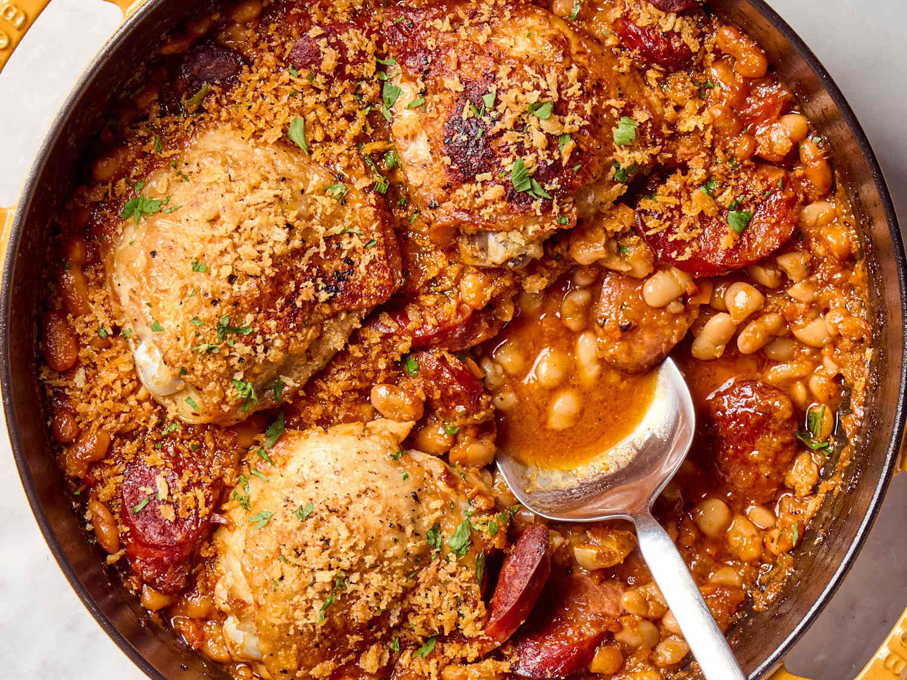

Cassoulet

Description
One of the best food coming from the beautiful city of Castelnaudary, a cassoulet is a dish made with duck leg,
beans, and sausage.
Ingredients
1 duck leg
1 duck fat
1 beans
1 sausage
Steps
- Cook the duck leg in the duck fat.
- Cook the beans and sausage in the duck fat.
- Serve the duck leg with the beans and sausage.
- Enjoy!
- Repeat.